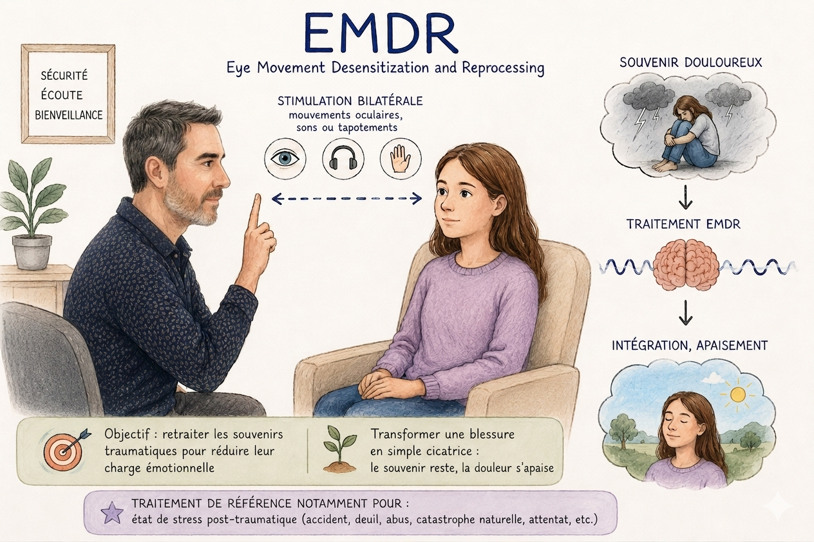

EMDR
EMDR-DSA à Ploufragan.
L'EMDR utilise des stimulations bilatérales (mouvements oculaires, sons ou tapotements) pour aider à retraiter les souvenirs négatifs liés à des traumatismes ou à des troubles anxieux.
Retraiter sans revivre le choc initial.
Cette approche thérapeutique permet de modifier la charge émotionnelle associée à ces souvenirs, afin de les intégrer de manière plus apaisée, sans revivre le choc initial, et de réduire leur impact au quotidien.
Reconnue comme un traitement de référence, l'EMDR est notamment indiquée dans le cadre du trouble de stress post-traumatique (TSPT) consécutif à des événements tels qu'un accident, un deuil, des violences, une catastrophe naturelle ou un attentat.
Cette thérapie vise à transformer une blessure en simple cicatrice : il ne reste que le souvenir mais il n'y a plus la douleur.

Vidéo
Explication de l'EMDR.
Une vidéo de présentation permet de mieux comprendre le fonctionnement de cette approche.